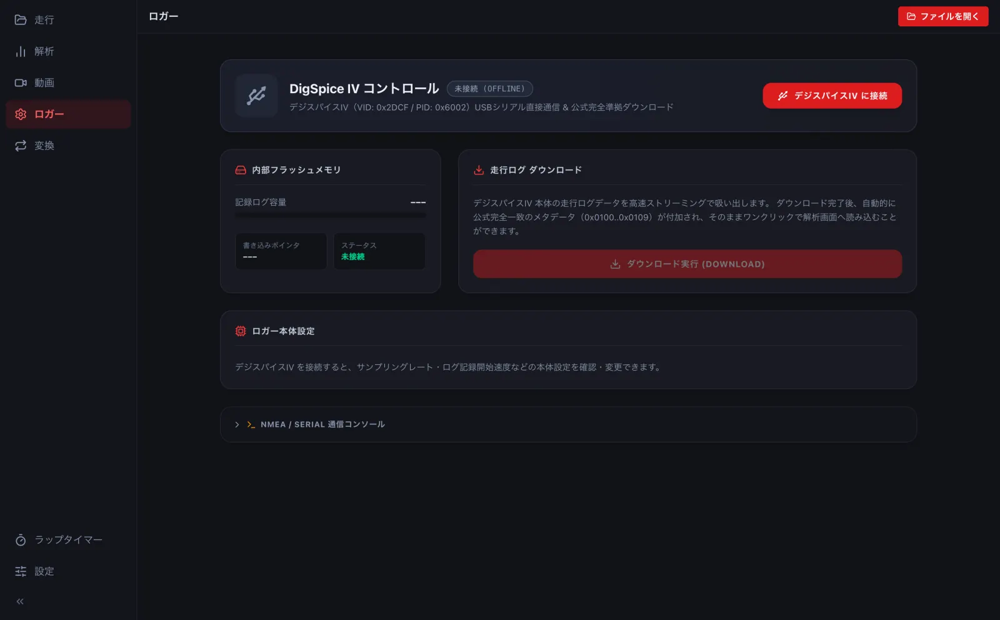
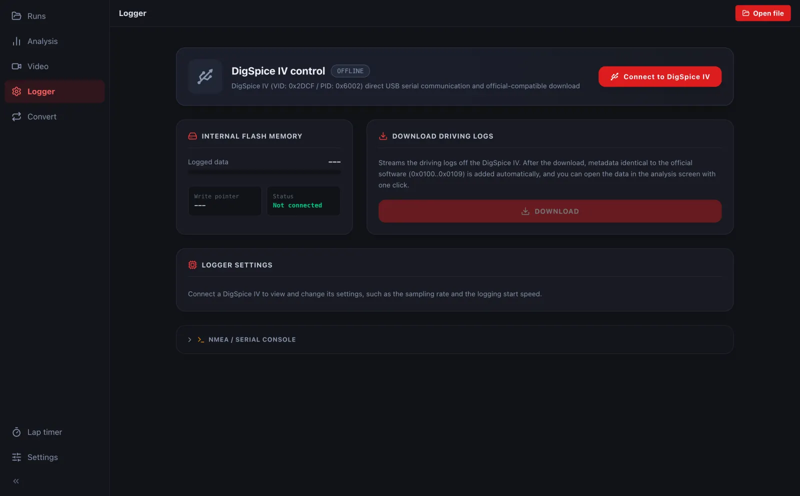

デジスパイスから吸い出す (USB)Downloading from a DigSpice (USB)
デジスパイスIV を USB で PC につなぎ、本体に記録した走行ログを吸い出します。Connect a DigSpice IV to the PC by USB and download the logs stored in it.
- デジスパイスIV を USB ケーブルで PC につなぎます。Connect the DigSpice IV to the PC with a USB cable.
-
左の ロガー を開き、デジスパイスIV に接続 を押して、出てきた窓で機器を選びます。Open Logger on the left, press Connect to DigSpice IV and pick the device in the window that appears.


- ダウンロード実行 を押すと吸い出します。吸い出したログは、そのまま解析の画面で開けます。Press DOWNLOAD to read the logs. They can be opened in Analysis right away.
ブラウザ版で USB を使えるのは、パソコンの Chrome・Edge だけです (Safari・Firefox では使えません)。In the browser, USB works only in desktop Chrome and Edge (not Safari or Firefox).
iPhone・Android のアプリは USB でつながず、Bluetooth で測りながら記録します (→ B1)。The iPhone and Android apps do not use USB; they record over Bluetooth while timing (→ B1).